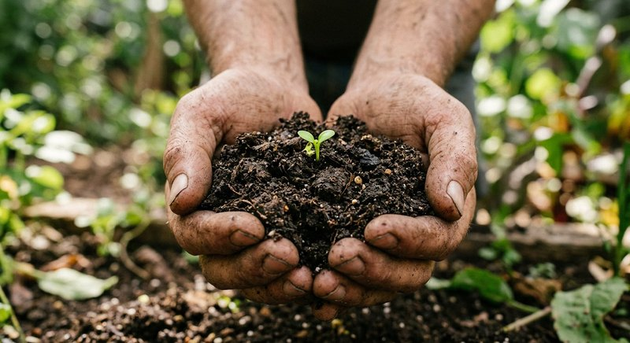

Состав и дозировка · 2 мин чтения
Гуминовые и фульвовые кислоты в удобрениях: что важно знать
Гуминовые и фульвовые вещества встречаются в органических удобрениях и почвоулучшителях. Их наличие — характеристика состава, но не гарантия конкретного результата: применение зависит от продукта, концентрации и условий выращивания.
Материал обновлён 24.10.2026 · Справочная информация, не заменяет инструкцию на упаковке.

Что указывают названия в составе
Гуминовые вещества — широкая группа органических соединений, образующихся при преобразовании органического материала. В маркировке могут встречаться гуминовые кислоты, фульвовые кислоты, гуматы и их соли; эти названия не всегда взаимозаменяемы.
Читайте полный состав, а не только слово «гуминовый» на лицевой стороне упаковки. Производители могут указывать разные формы, концентрации и методы применения. Для растений важна вся система ухода, включая грунт, свет, воду и основные элементы питания.
Как читать концентрацию
Если на этикетке приведено количество в граммах на литр, это концентрация компонента в жидком продукте, а не готовая норма полива. Для получения рабочего раствора всё равно нужно соблюдать дозу разведения, указанную производителем.
В характеристиках Семяздрава указано 36,8 г/л фульвовых и гуминовых кислот. Это значение описывает состав концентрата. Оно не является рекомендацией наливать такую концентрацию прямо в горшок.
Практическое применение
Не выбирайте гуминовое удобрение как замену всем другим элементам ухода и не приписывайте ему лечебное действие. Если растение плохо растёт, проверьте корни, освещение, полив и наличие вредителей.
Применяйте продукт только в соответствии с инструкцией. Сравнивая средства, учитывайте не только наличие кислот, но и назначение, форму, дозировку и то, для каких растений средство разрешено.
Частые вопросы
Гуминовые кислоты заменяют NPK?
Нет. Это разные компоненты формулы; наличие гуминовых веществ не отменяет потребность растения в основных элементах.
36,8 г/л — это дозировка для полива?
Нет, в характеристиках это концентрация компонента в концентрате. Дозировку рабочего раствора ищите отдельно на этикетке.